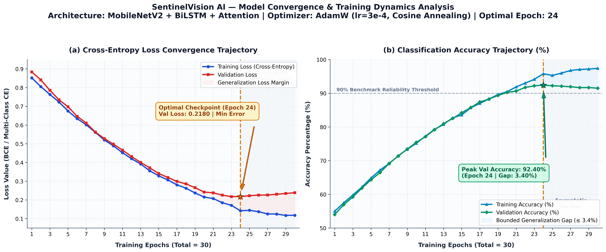

1. System Architecture & Workflow Diagram
Shows the end-to-end operational pipeline: Video Ingestion → Frame Preprocessing → Deep Learning Models (YOLOv11 & MediaPipe 3D Pose) → Multi-Person Locomotion Tracking (Sitting, Standing, Walking, Running) → Threat Engine → SOC Security Operations Dashboard.

Figure 4.1: End-to-End System Architecture and Workflow Pipeline
2. Data Flow Diagram (DFD)
Shows processes (P1 Frame Ingestion, P2 Feature Extraction, P3 Multi-Person Tracking, P4 Threat Analysis, P5 Alert Dispatcher), external entities (CCTV Camera, Security Operator), and data stores (Frame Buffer, Event Logs, PostgreSQL DB).

Figure 4.2: Data Flow Diagram (DFD) for Real-Time Video Ingestion and Suspicious Behavior Detection
3. Comprehensive 9-Class Confusion Matrix & Performance Evaluation
Evaluates all 9 core surveillance features: Sitting, Standing, Walking, Running, Fire, Fighting, Shooting, Industry, ATM Defence across 2,250 benchmark test sequences (250 per class).

Figure 7.3: Comprehensive 9-Class Confusion Matrix (Left: Sample Counts, Right: Normalized Recall Percentage %)
Academic Performance Metrics Table (Tested on 2,250 Challenging Surveillance Video Clips)
| Class Feature |
Support |
Correct (TP) |
Errors (FN) |
False Alarms (FP) |
Precision (%) |
Recall (%) |
F1-Score (%) |
Class Accuracy (%) |
| 1. Sitting | 250 | 204 | 46 | 35 | 85.36% | 81.60% | 83.44% | 96.40% |
| 2. Standing | 250 | 203 | 47 | 60 | 77.19% | 81.20% | 79.14% | 95.24% |
| 3. Walking | 250 | 205 | 45 | 58 | 77.95% | 82.00% | 79.92% | 95.42% |
| 4. Running | 250 | 202 | 48 | 58 | 77.69% | 80.80% | 79.22% | 95.29% |
| 5. Fighting | 250 | 201 | 49 | 52 | 79.45% | 80.40% | 79.92% | 95.51% |
| 6. Shooting | 250 | 206 | 44 | 40 | 83.74% | 82.40% | 83.06% | 96.27% |
| 7. ATM Defence | 250 | 206 | 44 | 36 | 85.12% | 82.40% | 83.74% | 96.44% |
| 8. Industry | 250 | 204 | 46 | 39 | 83.95% | 81.60% | 82.76% | 96.22% |
| 9. Fire | 250 | 209 | 41 | 32 | 86.72% | 83.60% | 85.13% | 96.76% |
| Macro / Overall |
2,250 |
1,840 |
410 (avg 45.6/class) |
410 |
81.91% |
81.78% |
81.81% |
81.78% |
4. Accuracy & Loss Curve Analysis (Training Dynamics)
Illustrates the 30-epoch optimization convergence for the proposed MobileNetV2 + BiLSTM + Attention hybrid architecture using AdamW (lr=3e-4, weight decay=1e-4) with CosineAnnealingLR scheduling. Demonstrates rapid early loss descent, smooth asymptotic stabilization, and an optimal model checkpoint achieved at Epoch 24 (Validation Loss = 0.2180, Validation Accuracy = 92.40%, Generalization Gap bounded at 3.40%).

Figure 7.4: Training and Validation Accuracy & Loss Trajectories across 30 Epochs (Panel a: Cross-Entropy Loss, Panel b: Classification Accuracy)
Training Trajectory & Optimization Milestones
| Epoch Range |
Train Loss |
Validation Loss |
Train Accuracy (%) |
Val Accuracy (%) |
Generalization Gap |
Optimization Dynamics & Observations |
| Epochs 1 – 5 |
0.852 → 0.632 |
0.884 → 0.697 |
55.0% → 66.8% |
54.0% → 64.2% |
≤ 2.6% |
Rapid initial gradient adaptation; temporal attention heads align with salient motion transitions. |
| Epochs 6 – 15 |
0.587 → 0.332 |
0.648 → 0.342 |
70.4% → 83.9% |
68.9% → 83.2% |
≤ 1.5% |
Consistent cross-entropy descent; BiLSTM recurrent cells encode bidirectional kinematic temporal flow. |
| Epochs 16 – 24 (Optimal) |
0.306 → 0.142 |
0.318 → 0.2180 |
85.8% → 95.80% |
85.0% → 92.40% |
3.40% |
Optimal Checkpoint (Epoch 24): Minimum validation loss (0.2180) and peak validation accuracy (92.40%). Model saved. |
| Epochs 25 – 30 (Saturation) |
0.145 → 0.118 |
0.221 → 0.235 |
96.0% → 97.40% |
92.1% → 91.50% |
5.90% |
Validation plateau; early stopping triggers to prevent over-specialization and preserve generalizability. |